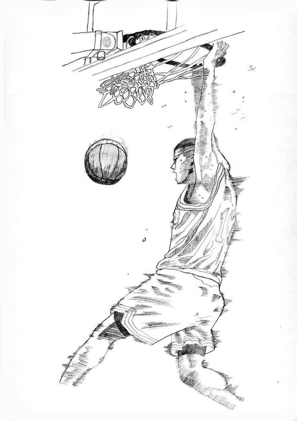
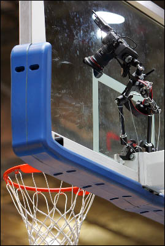

As a final project, I would like to make something that combines my passion for digital manufacturing to that for basketball.
The idea would be to realize a basket (complete with the board and ring) which can give, in the case of a dunk, the value of the intensity of the force applied to the ring of the basket.

Surfing the net i saw that someone has already tried to do this:
My idea is to create something like this, but I wish that the intensity of the dunk was shown directly on the board (perhaps with a scale of light, or with a numerical value) and not on an external device.
I also would like add a camera/video camera to photograph/film the dunk, like the ones found in professional leagues.
